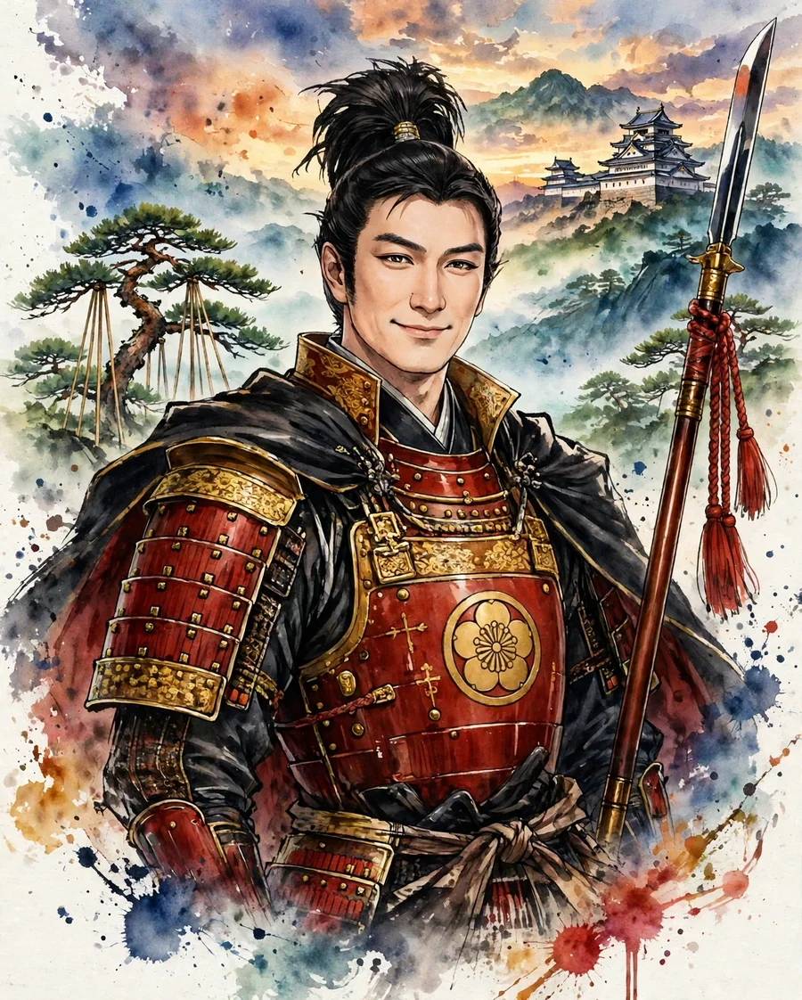

Maeda Toshiie
前田利家 (まえだ としいえ)

| Years | 1538–1599 |
|---|---|
| House | Maeda clan |
| Region | Chubu |
| Era | Azuchi-Momoyama period |
Overview
A native of Owari, he served Oda Nobunaga as a retainer and bore the nickname 'Matasa of the Spear.' After Nobunaga's death he served Hideyoshi, governed the Hokuriku region, and became a daimyo of Kaga. After Hideyoshi's death, the future of the Toyotomi house was entrusted to him as one of the Five Elders (Go-tairo).
Life
Born as a son of Maeda Toshimasa of Owari, he served Oda Nobunaga. Tradition says that in his youth there was a period when he was known for eccentric dress. He served in battles such as Okehazama and Anegawa, fought in the Hokuriku region as an aide to Shibata Katsuie, and was given Fuchu in Echizen and later Noto. After the Honno-ji Incident he served Hashiba Hideyoshi, and at the Battle of Shizugatake he ended up siding with Hideyoshi from a neutral position. Making Kanazawa Castle his seat, he became a great daimyo governing Kaga, Noto, and Etchu; after Hideyoshi's death he stood in the position of supporting the young Hideyori as one of the Five Elders, but died in 1599, before Ieyasu.
In battle
Toshiie was a commander who fought at the front as a master of the spear, but the latter half of his life as a daimyo centered on the stability of Hokuriku and his role as a coordinator, a senior statesman of the Toyotomi government. At the Battle of Suemori Castle, the story is told of how he rushed through the night to the relief of Suemori Castle, which was under attack by Sassa Narimasa. After he handed over the headship of the house to his son Toshinaga, the course taken by the Maeda house also affected the outcome of Sekigahara.
Arms and equipment
As his nickname 'Matasaemon of the Spear' indicates, he was known for his prowess with the spear. The anecdote that in his youth he caused an incident, cutting a man's hair clasp at Kukuri Village, and became a masterless samurai is a story from works such as the Taikoki. The supporting role of his wife Matsu (Hoshun-in) is also often told, and their story as a couple has become material for novels and dramas.
Character and records
Toshiie is often depicted as a man of coordination and loyalty who served three generations—Nobunaga, Hideyoshi, and Ieyasu—and greatly enlarged his house. The building of Kanazawa's castle town and the foundations of domain government began in Toshiie's time. The story that on his sickbed he admonished Ieyasu's ambition is a tale of later times, and its historical confirmation is considered difficult.
In literature
taikoki, tokugawa, kunidori
In Taikoki-style works Toshiie is depicted as a senior retainer supporting Hideyoshi, and in Tokugawa Ieyasu as a senior statesman of the Toyotomi government. Kunidori Monogatari is the story of the Nobunaga whom Toshiie served.
Castles connected with Maeda Toshiie
Recommended books on the age of the warlords
Castle Guide
Samurai Castles: History / Architecture / Visitors' Guides
Hundreds of color photographs and close-up detail on Japan's most important surviving samurai castles — their history, design and military features, with guidance for visitors. The best single companion for castle sightseeing.
View at Barnes & NobleCheck the price at Barnes & Noble
Book links on this page go to the retailers' product pages. Prices and availability are shown on the retailer's page.